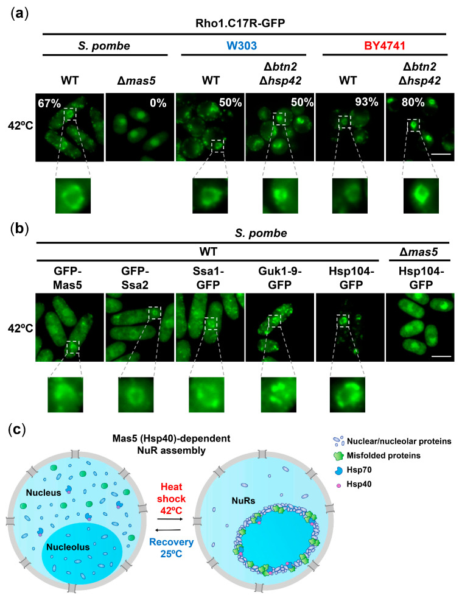

nucleolar peripheral inclusion body
An intranuclear inclusion at the nucleolar periphery in which nuclear factors collect reversibly during acute heat stress or starvation. [GO:0140602]

NCBITaxon:4896) · Susanna Boronat, Margarita Cabrera, Montserrat Vega, Jorge Alcalá, Silvia Salas-Pino, Rafael R. Daga, José Ayté, Elena Hidalgo; CC BY, via PubMed Central · CC_BY_4_0 · source: PMC PMC10342647.1 ijms-24-11202-f007 · DOI:10.3390/ijms241311202Synonyms: nucleolar rings; NuRs
Part of: nucleus (GO:0005634)
Components
| Component | Type | Part of / acts on | Grounding | Genes | Stoichiometry | Essential | Role |
|---|---|---|---|---|---|---|---|
| heterogeneous nuclear protein cargo | Other | part of | Reviewed label only (reviewed name; no accession asserted) | UNKNOWN | Stress-sequestered material rather than a fixed complex. Heat-stressed fission yeast recruits Alm1, Nup211, Nup132, Pab2, Nab2 and several cell-cycle regulators, among other factors. Nup85 and Mex67 are resolved separately below. These proteins are not asserted to share a family or to be present under every inducing condition.
| ||
| Nucleoporin Nup85-like | Protein | part of | InterPro:IPR011502 | nup85 | UNKNOWN | Nup85 leaves the nuclear pore and accumulates in NuRs during acute heat stress in fission yeast. Its fluorescence recovery is reduced at NuRs; during recovery it returns to the nuclear periphery.
| |
| Nuclear RNA export factor | Protein | part of | InterPro:IPR030217 | mex67 | UNKNOWN | Mex67 accumulates in heat-induced NuRs and overlaps Alm1-marked rings in fission yeast. Its ordinary mRNA-export function does not imply that export is active at NuRs or that the complete export machinery is present.
| |
| Heat shock protein 70 family | Protein | part of | InterPro:IPR013126 | ssa1, ssa2 | UNKNOWN | Ssa1 and Ssa2 are chaperone residents of severe-heat NuRs in fission yeast. This localization does not establish residence or essentiality for every Hsp70 paralogue.
| |
| DnaJ homolog subfamily A member 1/2-like | Protein | part of | InterPro:IPR044713 | mas5 | CONDITIONAL | Mas5 is a NuR-localized chaperone in fission yeast. Loss of Mas5 blocks the tested severe-heat reporter NuRs; this is an organism- and assay-specific requirement, not family-wide essentiality.
| |
| Hsp104-type disaggregase | Protein | acts on | Reviewed label only (reviewed name; no accession asserted) | hsp104 | DISPENSABLE | NuR-associated disaggregase in fission yeast that supports timely clearance during recovery. NuRs still form in its absence. Delayed clearance and regrowth after deletion do not isolate a NuR-only survival mechanism.
|
Organism-specific protein examples
Named proteins in which each component's role was established, with the organism the evidence comes from. The component above is the taxon-agnostic family; these are the specific entries behind it.
Nucleoporin Nup85-like
| Accession | Protein | Gene | Organism | Entry |
|---|---|---|---|---|
UniProtKB:Q9UUE5 | Nucleoporin nup85 | nup85 | Schizosaccharomyces pombe 972h- (NCBITaxon:284812) | REVIEWED |
Role and evidence (2 references)Reviewed reference-sequence identity for the fission-yeast factor. Localization and role rely on the cited experiments, not on the protein name or a claim that all tagged strains have this exact genotype.
| ||||
Nuclear RNA export factor
| Accession | Protein | Gene | Organism | Entry |
|---|---|---|---|---|
UniProtKB:Q9Y8G3 | mRNA export factor mex67 | mex67 | Schizosaccharomyces pombe 972h- (NCBITaxon:284812) | REVIEWED |
Role and evidence (2 references)Reviewed reference-sequence identity for the fission-yeast factor. Localization and role rely on the cited experiments, not on the protein name or a claim that all tagged strains have this exact genotype.
| ||||
Heat shock protein 70 family
| Accession | Protein | Gene | Organism | Entry |
|---|---|---|---|---|
UniProtKB:Q10265 | Probable heat shock protein ssa1 | ssa1 | Schizosaccharomyces pombe 972h- (NCBITaxon:284812) | REVIEWED |
Role and evidence (2 references)Reviewed reference-sequence identity for the fission-yeast factor. Localization and role rely on the cited experiments, not on the protein name or a claim that all tagged strains have this exact genotype.
| ||||
UniProtKB:O59855 | Probable heat shock protein ssa2 | ssa2 | Schizosaccharomyces pombe 972h- (NCBITaxon:284812) | REVIEWED |
Role and evidence (2 references)Reviewed reference-sequence identity for the fission-yeast factor. Localization and role rely on the cited experiments, not on the protein name or a claim that all tagged strains have this exact genotype.
| ||||
DnaJ homolog subfamily A member 1/2-like
| Accession | Protein | Gene | Organism | Entry |
|---|---|---|---|---|
UniProtKB:O74752 | Mitochondrial protein import protein mas5 | mas5 | Schizosaccharomyces pombe 972h- (NCBITaxon:284812) | REVIEWED |
Role and evidence (2 references)Reviewed reference-sequence identity for the fission-yeast factor. Localization and role rely on the cited experiments, not on the protein name or a claim that all tagged strains have this exact genotype.
| ||||
Hsp104-type disaggregase
| Accession | Protein | Gene | Organism | Entry |
|---|---|---|---|---|
UniProtKB:O94641 | Heat shock protein 104 | hsp104 | Schizosaccharomyces pombe 972h- (NCBITaxon:284812) | REVIEWED |
Role and evidence (2 references)Reviewed reference-sequence identity for the fission-yeast factor. Localization and role rely on the cited experiments, not on the protein name or a claim that all tagged strains have this exact genotype.
| ||||
Canonical examples
NCBITaxon:4896Schizosaccharomyces pombe — Defining acute-heat experiments shift cells from 25 C to 42 C for 10 or 20 minutes, followed where specified by recovery at 25 C. [DOI:10.1016/j.celrep.2020.108377]NCBITaxon:4932Saccharomyces cerevisiae — Figure 7a reports NuRs in W303 and BY4741 derivatives at 42 C for 15 minutes. Methods 4.3 requires 50-fold concentration of W303 cultures before heat treatment; that preparation is not generalized to BY4741 or fission yeast. [DOI:10.3390/ijms241311202]NCBITaxon:284812Schizosaccharomyces pombe 972h- — Native NCBI strain taxon for the reviewed reference-sequence examples. This does not assign every tagged or mutant strain in the papers to an independently verified genotype. [UniProtKB:Q9UUE5]
Functions
- reversible sequestration of nuclear proteins — Collects selected nuclear factors during acute heat stress. Nup85 and Mex67 show reduced mobility; recovery releases factors to their usual locations. Coordinated shutdown of nuclear activities and protection from damage are interpretations, not a proven NuR-specific causal pathway.
DOI:10.1016/j.celrep.2020.108377Figures 1-3 and Discussion support sequestration and release while distinguishing the proposed physiological model.
Mechanism graphs
NuR formation under acute heat stress (ASSEMBLY)
| Subject | Predicate | Object | Evidence |
|---|---|---|---|
| Acute 42 C heat stress | induces | nucleolar peripheral inclusion body |
|
| mas5 deletion | blocks | nucleolar peripheral inclusion body |
|
| 37 C preconditioning for 45 minutes before 42 C stress | suppresses | nucleolar peripheral inclusion body |
|
NuR clearance after acute heat stress (DISASSEMBLY)
| Subject | Predicate | Object | Evidence |
|---|---|---|---|
| Return to 25 C after acute heat stress | permits | NuR disassembly during recovery |
|
| hsp104 deletion | delays | NuR disassembly during recovery |
|
| Repressed purg1-driven hsf1 expression | delays | NuR disassembly during recovery |
|
Discussions
- INTERPRETATION (RESOLVED): Keep NuRs distinct from neighboring deposits and similarly abbreviated assemblies. Spatial similarity and a shared stress response are not exact structure identity.
- INTERPRETATION (RESOLVED): Separate sequestered cargo from intact complexes, central nucleolar markers and upstream regulators. Protein redistribution and perturbation phenotypes do not establish whole-complex membership.
- CURATION_TODO (OPEN): Extend the component inventory and resolve exact Hsp104 and heterogeneous-cargo groundings where possible. The six-class core is not an exhaustive native composition or a fixed stoichiometry.
- INTERPRETATION (OPEN): Determine which composition and clearance mechanisms are shared between heat-induced and starvation-associated inclusions. GO groups inducing conditions, but this does not make experimental mechanisms interchangeable.
- CURATION_TODO (OPEN): Resolve broader distribution, native-client datasets and physical properties with structure-specific evidence. Two yeast models do not establish fungal prevalence or universal condensate physics.
Evidence
GO:0140602Active cellular-component identity and exact synonyms verified through native QuickGO. The definition cites PMID 33176152 and PMID 37128864 and includes both heat stress and starvation.GO:0042405QuickGO directly lists GO:0140602 as an is_a child of nuclear inclusion body; nucleus lists nuclear inclusion body as part_of.DOI:10.1016/j.celrep.2020.108377Gallardo et al. (2020), PMID 33176152. Full publisher-version PDF read from the Universidad Pablo de Olavide repository, https://hdl.handle.net/10433/22772. Main Results, Discussion, Methods and captions inspected; Figures 1-2 visually inspected. Supplemental materials and raw data were not independently inspected. CC BY-NC-ND 4.0 figures are not hosted.DOI:10.3390/ijms241311202Boronat et al. (2023), PMID 37446379, PMC10342647.1. Native JATS Results 2.5, Discussion, Methods and Figure 7 caption read; figure pixels inspected. Native metadata confirms non-retracted CC BY 4.0 article. Supplemental panels were not independently inspected.DOI:10.1242/jcs.260727Hiraoka et al. (2023), PMID 37128864. Publisher Results around Figure 3 and Discussion read: Cdc2, Cdc13 and Clp1 accumulate peripherally during stationary phase or glucose depletion, distinct from central Gar1/Gar2. This supports GO's broader scope, not identical heat-stress composition or mechanism.
Curation history
2026-10-05T11:39:49Zcodex · CREATED_RECORD — Scaffolded by scripts/new_record.py2026-10-05T11:41:52Zcodex · EXPANDED_RECORD — Added exact GO identity and hierarchy, six bounded component classes and six reference proteins, two intervention graphs, source-scope discussions and an inspected CC BY 4.0 figure.2026-10-05T11:57:56Zcodex · RESOLVED_REVIEW — Resolved issue #2063 by limiting the fission-yeast canonical-example note to the experiment supported by its own 2020 reference; independently cited 2023 assay descriptions remain elsewhere.
Source: data/structures/inclusion/nucleolar_peripheral_inclusion_body.yaml